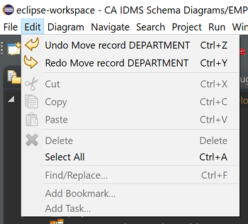

Edit Menu
The menu items of interest in the Edit Menu are the ones related to the undo/redo functions : like in many other editing
programs, every action you take on a diagram is (temporarily) recorded and you are able to undo the last action(s)
you did, as well as redo them if you want to. So, if an accident happens, you will be able to recover your work and you
don't lose the things you have been working on for hours.

Note that the diagram editor is so kind to show you what you can undo or redo.